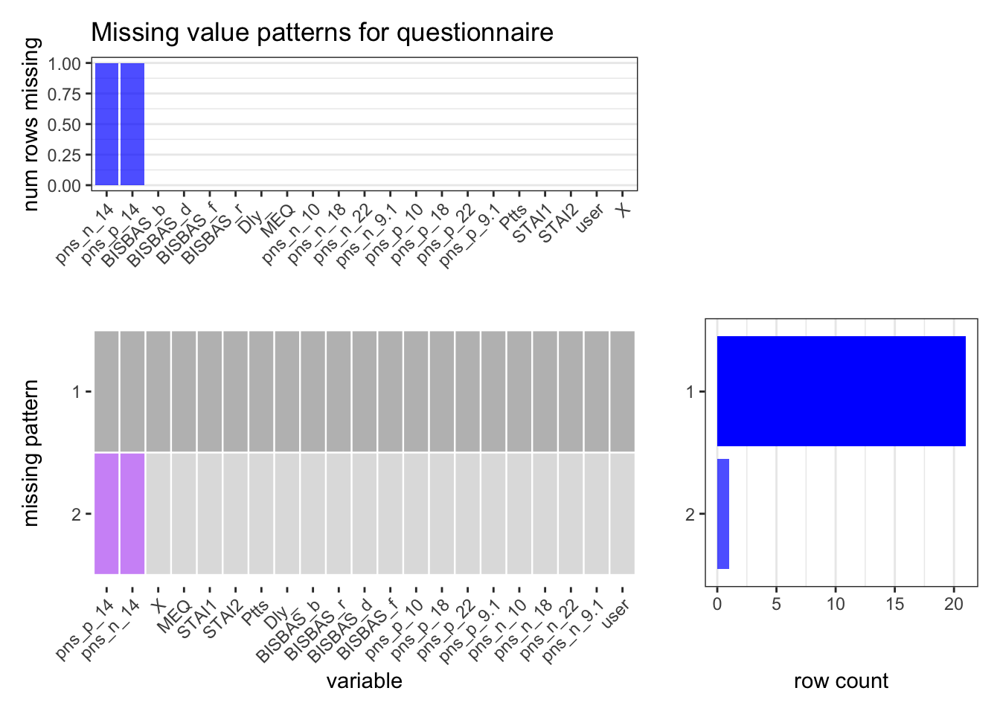

Chapter 4 Missing values
Missing information includes -
file information missing: user_11 is missing sleep.csv information
No clock genes and hormones concentrations data was provided for User_21 due to problem in the salivary samples that do not permit to analyse it.
missing age for user_18 in user_info
user_13 is missing questionnaire
Since the aim of our project is to define a metric for sleep quality and identify variables with that affect it, user 11 was excluded from all the analysis performed.
4.1 Missing Value Plot
Here we revise the function we created in problem set 4 to plot the missing patterns. The number of missing values are very few (mentioned above). We generated missing value plots only for questionnaire and activity as they seemed to exhibit some pattern.
As shown in the plots, only one row with missing values exist in activity and questionnaire, respectively.
There is only one missing value in “End” variable which is defined as the time of the day when the event or activity concluded. For example, if a user smoked from 10:30 AM to 10:40 AM then End would be set to 10:40 AM. Except this one missing value, all others are complete cases.

We generated this plot after removing user 13 so as to not distort the actual missing value patterns for users that have a record for questionnaire. Similar to activity, this file category has only two patterns - complete cases and two missing values that correspond to the levels of a variable “PANAS”. PANAS is defined as the positive and negative affect schedule. It gives a score rating between 5 and 50 for both positive and negative emotions and higher the value, the higher is the perceived emotion. There are only one rows that are not complete.
